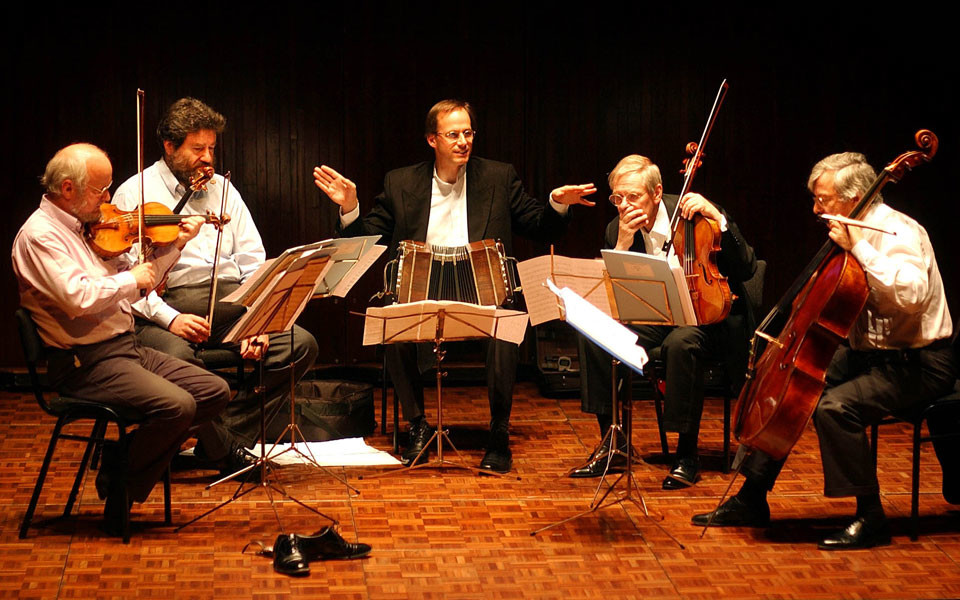
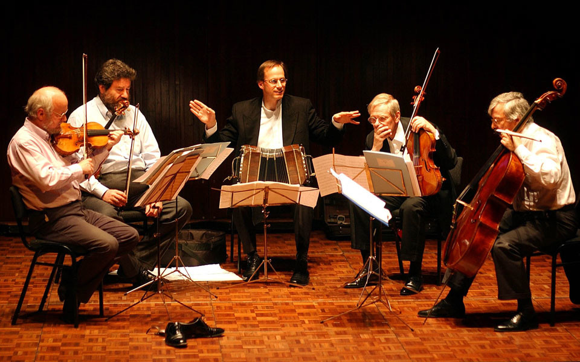

Performances
Upcoming Performances
2022
- May 10th, Sentralen, Oslo: WP Double Concerto for Viola, Bandoneon and Chamber Orchestra
Eivind Holtsmark Ringstad, Viola The Norwegian Chamber Orchestra.More details - Jun 16th-19th: Kirsten Flagstad Festial Hamar; GLO2020;Marinemusikken Cathrine Winnes Festival Page
- Jun 24th: Busjord, Dovre. Rolf Lislevand, Berit Opheim. VENERUS More details
- Jun 26th: Aria Borealis, Bodø. Rolf Lislevand, Berit Opheim. More details
- Aug 24th-28th: Masterclasses, competition jury; Iglesias, Sardinia.
Own Pieces
For 2019-21 Per Arne is composing/premiering several new compositions:
- DOUBLE-CONCERTO for viola, bandoneon and chamberorchestra commissioned by Eivind Ringstad Holtsmark and the Norwegian Chamberorchestra (premiere autumn 2021).
- PIECE FOR TWO BANDONEONS and sinfonietta commissioned by the Artic Sinfonietta (premiere 2021 tbc)
- CANCIONES DE COBRE ; A new piece for Ny Norsk Brass-Quintet and bandoneon with lyrics/reading by Kjartan Fløgstad (at the Lillehammer Litterature-festival May 29th 2020).
- Le Grand Tango feat.POLACO, a new quintetpiece premiere jan 12th 2020 at the Opera in Oslo.
- TANGOFO for bandoneon and orchestra commissioned by the Oslo Philharmonic Orchestra (premiere jan 8th 2019).
All Performances
2020
- Feb 16th: Bandoneon SOLO Halberstadt 18.00
- Feb 15th: Bandoneon SOLO Evangelisch Kirche Falkensee (Berlin) 16.00
- Feb 14th: Bandoneon SOLO/Duo Lisandro Baum 21.00
La Cita: Adresse: 1ter Rue Deguerry PARIS 75011 - Feb 9th: BOZAR, Bruxelles 15.00 Glorvigen-Trio
2019
- Nov 29th-30th: Avignon conservatory concert with own works and conference
- Oct 6th: Gütersloh Theater, Glorvigen-Trio
- Oct 1st-2nd: Dortmund Philharmonic:Bernd Franke: Open Doors
- Sep 20th: Champagne, Jean-Christophe Leclère
- Jul 12th-14th: Lofoten Internasjonale Kammermusikkfest: Violent Tenderness
- Jul 6th: Glorvigen Trio, Hauzenberg
- Jun 8th-10th: Riga Kremerata Baltica/Kremer: Tango Funèbre+Piazzolla
- May 8th: Resonans Gjøvik
- May 3th: Ibsenhuset Skien Norsjø Kammermusikkfestival:Violent Tenderness, Scènes de Bistro, Piazzolla
- Mar 29th: Berlin Philharmonie “El Arte de la Fuga y del Tango”, Glorvigen-Trio. More details
- Mar 23th: Lausanne, Switzerland l’Eglise Saint-François with Jean-Christophe Leclère, harpsichord/organ
- Mar 19th: Halvorsen Musikkfest Strømsø Kirke, Drammen “El Arte de la Fuga y del Tango”, Glorvigen Trio. Festival Page
- Mar 1st-3rd: Tangofestival Komische Oper, Berlin with Glorvigen Trio, Gidon Kremer & Kremerata Baltica
- Jan 8th-11th: Oslo Philharmonic New Years Concerts World Premiere “Tangofo”
2018
- Dec 28-29th Dovrejul festival. Two World Premieres: B.K.Odde “Slåttånd” and O.Hjellemo “Symphony nr.4”,;
With The Trondheim Soloists, Bjørn S.Glorvigen, Paul Wilmot… - Nov 14th: “El Arte de la Fuga y del Tango” Hamm (Dortmund), Glorvigen Trio
- Nov 2nd:“El Arte de la Fuga y del Tango” Ratingen (Düsseldorf) Glorvigen Trio.
- Oct 27th: Tango con Amigos 2 Stavanger Konserthus Fartein Valen
- Oct 23rd: Fryd Scene, Ål Trio Jensen/Haugerud/Glorvigen
- Oct 3rd-7th: Elbland Philharmonie Franke”Open Doors”, Piazzolla “Aconcagua”
- Sep 29th: Bautzen “Glorvigen Trio” “El Arte de la Fuga y del Tango”
- Sep 3rd-21st: KSS Schooltour Norway
- Aug 18th: Switzerland with Jean-Christophe Leclère, organ/harpsichord
- Aug 7th-12th: ICMF Stavanger Chambermusicfestival. World Premiere “Shantid” for harp (Marie-Pierre Langlamet) and Glorvigen Trio.
Violent Tenderness with Maxwell Quartet. Kagel: Pandoras Box. “El Arte de la Fuga y del Tango” (Glorvigen Trio) - Jul 23rd: Voss Festival NordAccordion “Glorvigen Trio” “El Arte de la Fuga y del Tango”
- Aug 16th: Bachfest Leipzig “Glorvigen Trio” “El Arte de la Fuga y del Tango”
- Aug 4th-9th: Recording own works for cello and bandoneon. Andreas Brantelid/Norwegian Chamber Orchestra.(Simax)
- May 18th-20th: Festival “Lille Norge” Radialsystem V,Berlin. www.lillenorge.de Glorvigen: “Dos Noruegos en Buenos Aires” Norwegian Chamber Orchestra/Ø.Gimse May 19 22.30. Kagel: Pandoras Box May 20 12.00 Glorvigen: Violent Tenderness May 20 14.00 (string quartet led by Bjarne Magnus Jensen)
- Apr 10th: Rouen Ensemble Variances/Thierry Pécou (Pecou/Glorvigen/Piazzolla)
- Mar 25th: Festival “Musik in Sandstein” Kirche in Berggießhübel “El Arte de la Fuga y del Tango”, Glorvigen Trio
- Mar 24th: Thüringer Bachwochen Wartburg (Eisenach) “El Arte de la Fuga y del Tango”, Glorvigen Trio
- Mar 7th-20th: KSS Schooltour Norway
- Feb 24th: Hemsingfestival, Valdres Norway
- Feb 9th-15h: Piazzollas bandoneonconcerto with Orchestre Nationale d’Ile de France/C.Arming
- Feb 9th: Théâtre Espace Coluche, Plaisir
- Feb 11th: Centre Jacques Prévert, Villeparisis
- Feb 13th: Salle Gaveau, Paris
- Feb 14th: Seine Musicale, Boulogne-Billancourt
- Feb 15th: Centre Culturel Les 3 Pierrots, Saint-Cloud
- Jan 24th-28th: Glogerfestspillene Kongsberg, Norway
2017
- Nov 3rd: Grieghallen Bergen “Tango con amigos”
- Oct 15th: Musikkens Venner Åsnes trio Haugerud/Jensen
- Oct 14th: Hamar Kulturhus Tango for 3
- Sep 16th: Maihaugsalen, Lillehammer “Tango con amigos”
- Aug 31th-Sep 3rd: Purbeck Festial, UK
- Aug 5th: Glorvigen-Trio Nordhausen
- Jul 30th: Glorvigen-Trio Ringebu Stavkyrkje Norway
- Jul 23rd: Glorvigen-Trio Budsjord Dovre Norway
- Jul 22nd: 12.00 Glorvigen-Trio Drøbak Kirke Norway
- Jul 3rd: Glorvigen-Trio Feldkirch (Austria)
- Jun 23rd: Maria de Buenos Aires Dresden
- Jun 15th: Glorvigen-Trio Lenzburg (Switzerland)
- May 30th-Jun 2nd: Festival Det Vilde Ord Bodø, Norway “Fjellkjelda” for choir and Tangotrio.
With S.Haugerud, B.M.Jensen, Guri S.Botheim and Vokal Art - Mar 15th: Glorvigen-Trio Remscheid
- Feb 22th-24th: Venice with J.C.Leclere, haprsichord/organ
- Feb 10th: Luzern with Apollon Musagète String Quartet
- Jan 22nd: Oslo Opera: Tango con Amigos [Sold out]
- Jan 15th: Arve Tellefsen anniversary concert Oslo Opera [Sold out]
2016
- Sep 14th: September 14th 2016 PA.Glorvigen Trio “Kreuzgang am Kaiserdom” Königslutter
- Aug 16th-20th: Stavanger International Chamber Music Festival
- Aug 14th: Høgfjellskonserten “Ved Rondane” Det Norske Solistkor, Charlie Siem, Steinar Haugerud incl. WP on “Fjellkjelda”
PA.Glorvigens new composition on texts by Guri Sørumgård Botheim and Anna Kleiva for choir, violin, double-bass and bandoneon - Jul 24th-30th: Teaching at Bloomington summer cours
- Jun 15th-20th: Kirsten Flagstadfestival Hamar
- May 11th: Bodenseefestival Ravensburg PA.Glorvigen Trio
- Apr 21st: Fagerborgfestspillene festival Oslo PA.Glorvigen: Dos Noruegos en Buenos Aires
w.Joon-Ho Shim, cello PA.Glorvigen, Bandoneon and Barrat-Due Institute Orchestra - March: Tour w.Telemark BrassQuintet World-Premiere of Per Arnes new piece for brass-quintet and bandoneon
including Ottar Kaasa, Hardingfiddle and tangodancers Pablo Inza/Sofia Saborido+FRIKAR
- Mar 2nd: Vinje
- Mar 3rd: Selfjord
- Mar 4th: Bø
- Mar 5th: Riksscenen Oslo
- Mar 6th: Skien
- Feb 17-19th: Hemsingfestival, Valdres Festival website
- Feb 1st-5th: Trondheim Barokk-Festival m.Tormod Dalen, barock-cello Festival website
2015
- Dec. Composing of the new commission for (Telemark) brass-quintet and bandoneon. Stay in Argentina
- Nov 14th: Frantziskanerkloster Kempen (Mönchengladbach) PA.Glorvigen Trio
- Sep 11th-16th: KKKK Festival Krisitansund WP Stabat Mater by Per Arne Glorvigen for choir, strings, soprano, percussion and bandoneon
- Aug 29th: Musikfest Bremen Apollon Musagète Quartet
- Aug 26th: Chopin Festival Warsaw Apollon Musagète Quartet
- Aug 21th: Hohenlohe Solo Recital
- Aug 17-19th: Oslo Chamber Music Festival PA.Glorvigen Trio
- Aug 15th: PA.Glorvigen Trio Wismar
- Aug 7th: MDR Musiksommer Stolpen (Dresden)
- Jul 20th: Hauzenberg Apollon Musagète Quartet
- Jul 4th: Sächsische Staatskapelle/Vladimir Jurovski Dresden
- Jun 8th: Bergen Festival PAG Trio
- May 17th: Sclosss Corvey Delian Quartett
- Mar 20th: Komische Oper Berlin Maria de Buenos Aires March 21,Komische Oper Berlin Orquesta Tipica de Tango March 22. Komische Oper Berlin Maria de Buenos Aires
- Mar 13th: Larvik Maria de Buenos Aires feat.Jliia Zenko March 14th Lillehammer Maria de Buenos Aires March 15 National Opera Oslo Maria de Buenos Aires
- Jan 30th: Beethoven-Haus Bonn PA.Glorvigen Trio
- Jan 11th: Hof Kirke Åsnes Norway
2014
- Dec 28th: DOVREJUL MUSIC FESTIVAL 1.Year! Per Arne and brother Bjørn Sigurd with a new intimate festival in hometown Dovre, Norway
- Dec 4th: MDR-Sinfonieorchester Leipzig dir.Kristian Järvi Taneli Turunen cello/vocals, PA.Glorvigen Bandoneon. Tüür, Grieg, Glorvigen: Dos Noruegos en Buenos Aires, doubleconcerto for cello, bandoneon and strings